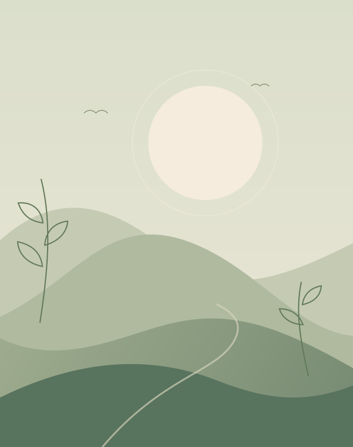

01 / MOVEMENT
Yoga
Explore movement with attention. Yoga connects postures and breath, creating room to develop strength, flexibility, and body awareness.
A LITTLE SPACE FOR YOURSELF
Through movement, breath, and stillness.
I’m Shailesh Barthwal, a yoga teacher, breath facilitator, and meditation coach. Explore a practice that brings your attention back to what matters: you, here, now.

A space for Shailesh’s portraitTHE PERSON BEHIND THE PRACTICE
Yoga teacher. Breath facilitator.
Meditation coach.
My work brings together three connected practices: yoga, breathwork, and meditation. Each offers a different way to pause, notice, and reconnect with yourself.
I hold a B.Sc. and an M.Sc. in Yoga Science, an academic foundation that informs my work with movement, breathing, and awareness.
This is a space to get to know me and explore these practices, whether yoga is something new to you or already part of your life.
THREE WAYS TO RECONNECT
Not just what happens on the mat.
A little more awareness in everyday life.
Explore movement with attention. Yoga connects postures and breath, creating room to develop strength, flexibility, and body awareness.
Notice the rhythm you carry everywhere. Gentle breath awareness offers a way to slow down and pay attention to the present moment.
Take a moment to simply be. Meditation is a practice of returning your attention, without needing to make your mind perfectly quiet.
A PRACTICE FOR REAL LIFE
Life asks a lot of us. Yoga can be a small, intentional pause: a chance to move, breathe, and listen.
Begin a conversationMindful movement can support mobility, balance, and a better awareness of how you feel.
Gentle practice may help you unwind and make space for rest in a busy day.
Working with breath and awareness gives you opportunities to practise being present.
YOUR NEXT CHAPTER CAN START SMALL
Interested in practising with Shailesh?
Class enquiries and ways to connect will be shared here.